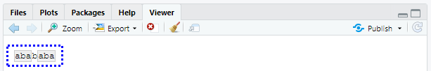

10.4 패턴 매칭
이제 정규표현식의 기초를 배웠으므로 실제 문제에 적용하는 법에 대해 알아보자. 이 절에서는 다음을 수행하는 다양한 stringr 함수들을 배울 것이다.
- 어떤 문자열이 패턴과 매칭하는지 결정.
- 매칭의 위치를 찾기.
- 매칭의 내용을 추출.
- 매칭된 것을 새 값으로 교체.
- 매칭를 기반으로 문자열 분할.
계속 진행하기 전에 주의할 점은, 정규표현식은 너무 강력해서 모든 문제를 정규표현식 하나로 접근하려고 하기 쉽다는 것이다. 제이미 자윈스키(Jamie Zawinski)의 말을 들어보자.
문제에 직면했을 때 어떤 사람들은 ’풀 수 있어. 정규표현식을 사용하면 돼’라고 생각한다. 이제 그들에겐 풀어야 할 문제가 두 개이다.
조심하라는 뜻으로 이메일 주소가 유효한지를 검사하는 다음의 정규표현식을 살펴보라.
(?:(?:\r\n)?[ \t])*(?:(?:(?:[^()<>@,;:\\".\[\] \000-\031]+(?:(?:(?:\r\n)?[ \t]
)+|\Z|(?=[\["()<>@,;:\\".\[\]]))|"(?:[^\"\r\\]|\\.|(?:(?:\r\n)?[ \t]))*"(?:(?:
\r\n)?[ \t])*)(?:\.(?:(?:\r\n)?[ \t])*(?:[^()<>@,;:\\".\[\] \000-\031]+(?:(?:(
?:\r\n)?[ \t])+|\Z|(?=[\["()<>@,;:\\".\[\]]))|"(?:[^\"\r\\]|\\.|(?:(?:\r\n)?[
\t]))*"(?:(?:\r\n)?[ \t])*))*@(?:(?:\r\n)?[ \t])*(?:[^()<>@,;:\\".\[\] \000-\0
31]+(?:(?:(?:\r\n)?[ \t])+|\Z|(?=[\["()<>@,;:\\".\[\]]))|\[([^\[\]\r\\]|\\.)*\
](?:(?:\r\n)?[ \t])*)(?:\.(?:(?:\r\n)?[ \t])*(?:[^()<>@,;:\\".\[\] \000-\031]+
(?:(?:(?:\r\n)?[ \t])+|\Z|(?=[\["()<>@,;:\\".\[\]]))|\[([^\[\]\r\\]|\\.)*\](?:
(?:\r\n)?[ \t])*))*|(?:[^()<>@,;:\\".\[\] \000-\031]+(?:(?:(?:\r\n)?[ \t])+|\Z
|(?=[\["()<>@,;:\\".\[\]]))|"(?:[^\"\r\\]|\\.|(?:(?:\r\n)?[ \t]))*"(?:(?:\r\n)
?[ \t])*)*\<(?:(?:\r\n)?[ \t])*(?:@(?:[^()<>@,;:\\".\[\] \000-\031]+(?:(?:(?:\
r\n)?[ \t])+|\Z|(?=[\["()<>@,;:\\".\[\]]))|\[([^\[\]\r\\]|\\.)*\](?:(?:\r\n)?[
\t])*)(?:\.(?:(?:\r\n)?[ \t])*(?:[^()<>@,;:\\".\[\] \000-\031]+(?:(?:(?:\r\n)
?[ \t])+|\Z|(?=[\["()<>@,;:\\".\[\]]))|\[([^\[\]\r\\]|\\.)*\](?:(?:\r\n)?[ \t]
)*))*(?:,@(?:(?:\r\n)?[ \t])*(?:[^()<>@,;:\\".\[\] \000-\031]+(?:(?:(?:\r\n)?[
\t])+|\Z|(?=[\["()<>@,;:\\".\[\]]))|\[([^\[\]\r\\]|\\.)*\](?:(?:\r\n)?[ \t])*
)(?:\.(?:(?:\r\n)?[ \t])*(?:[^()<>@,;:\\".\[\] \000-\031]+(?:(?:(?:\r\n)?[ \t]
)+|\Z|(?=[\["()<>@,;:\\".\[\]]))|\[([^\[\]\r\\]|\\.)*\](?:(?:\r\n)?[ \t])*))*)
*:(?:(?:\r\n)?[ \t])*)?(?:[^()<>@,;:\\".\[\] \000-\031]+(?:(?:(?:\r\n)?[ \t])+
|\Z|(?=[\["()<>@,;:\\".\[\]]))|"(?:[^\"\r\\]|\\.|(?:(?:\r\n)?[ \t]))*"(?:(?:\r
\n)?[ \t])*)(?:\.(?:(?:\r\n)?[ \t])*(?:[^()<>@,;:\\".\[\] \000-\031]+(?:(?:(?:
\r\n)?[ \t])+|\Z|(?=[\["()<>@,;:\\".\[\]]))|"(?:[^\"\r\\]|\\.|(?:(?:\r\n)?[ \t
]))*"(?:(?:\r\n)?[ \t])*))*@(?:(?:\r\n)?[ \t])*(?:[^()<>@,;:\\".\[\] \000-\031
]+(?:(?:(?:\r\n)?[ \t])+|\Z|(?=[\["()<>@,;:\\".\[\]]))|\[([^\[\]\r\\]|\\.)*\](
?:(?:\r\n)?[ \t])*)(?:\.(?:(?:\r\n)?[ \t])*(?:[^()<>@,;:\\".\[\] \000-\031]+(?
:(?:(?:\r\n)?[ \t])+|\Z|(?=[\["()<>@,;:\\".\[\]]))|\[([^\[\]\r\\]|\\.)*\](?:(?
:\r\n)?[ \t])*))*\>(?:(?:\r\n)?[ \t])*)|(?:[^()<>@,;:\\".\[\] \000-\031]+(?:(?
:(?:\r\n)?[ \t])+|\Z|(?=[\["()<>@,;:\\".\[\]]))|"(?:[^\"\r\\]|\\.|(?:(?:\r\n)?
[ \t]))*"(?:(?:\r\n)?[ \t])*)*:(?:(?:\r\n)?[ \t])*(?:(?:(?:[^()<>@,;:\\".\[\]
\000-\031]+(?:(?:(?:\r\n)?[ \t])+|\Z|(?=[\["()<>@,;:\\".\[\]]))|"(?:[^\"\r\\]|
\\.|(?:(?:\r\n)?[ \t]))*"(?:(?:\r\n)?[ \t])*)(?:\.(?:(?:\r\n)?[ \t])*(?:[^()<>
@,;:\\".\[\] \000-\031]+(?:(?:(?:\r\n)?[ \t])+|\Z|(?=[\["()<>@,;:\\".\[\]]))|"
(?:[^\"\r\\]|\\.|(?:(?:\r\n)?[ \t]))*"(?:(?:\r\n)?[ \t])*))*@(?:(?:\r\n)?[ \t]
)*(?:[^()<>@,;:\\".\[\] \000-\031]+(?:(?:(?:\r\n)?[ \t])+|\Z|(?=[\["()<>@,;:\\
".\[\]]))|\[([^\[\]\r\\]|\\.)*\](?:(?:\r\n)?[ \t])*)(?:\.(?:(?:\r\n)?[ \t])*(?
:[^()<>@,;:\\".\[\] \000-\031]+(?:(?:(?:\r\n)?[ \t])+|\Z|(?=[\["()<>@,;:\\".\[
\]]))|\[([^\[\]\r\\]|\\.)*\](?:(?:\r\n)?[ \t])*))*|(?:[^()<>@,;:\\".\[\] \000-
\031]+(?:(?:(?:\r\n)?[ \t])+|\Z|(?=[\["()<>@,;:\\".\[\]]))|"(?:[^\"\r\\]|\\.|(
?:(?:\r\n)?[ \t]))*"(?:(?:\r\n)?[ \t])*)*\<(?:(?:\r\n)?[ \t])*(?:@(?:[^()<>@,;
:\\".\[\] \000-\031]+(?:(?:(?:\r\n)?[ \t])+|\Z|(?=[\["()<>@,;:\\".\[\]]))|\[([
^\[\]\r\\]|\\.)*\](?:(?:\r\n)?[ \t])*)(?:\.(?:(?:\r\n)?[ \t])*(?:[^()<>@,;:\\"
.\[\] \000-\031]+(?:(?:(?:\r\n)?[ \t])+|\Z|(?=[\["()<>@,;:\\".\[\]]))|\[([^\[\
]\r\\]|\\.)*\](?:(?:\r\n)?[ \t])*))*(?:,@(?:(?:\r\n)?[ \t])*(?:[^()<>@,;:\\".\
[\] \000-\031]+(?:(?:(?:\r\n)?[ \t])+|\Z|(?=[\["()<>@,;:\\".\[\]]))|\[([^\[\]\
r\\]|\\.)*\](?:(?:\r\n)?[ \t])*)(?:\.(?:(?:\r\n)?[ \t])*(?:[^()<>@,;:\\".\[\]
\000-\031]+(?:(?:(?:\r\n)?[ \t])+|\Z|(?=[\["()<>@,;:\\".\[\]]))|\[([^\[\]\r\\]
|\\.)*\](?:(?:\r\n)?[ \t])*))*)*:(?:(?:\r\n)?[ \t])*)?(?:[^()<>@,;:\\".\[\] \0
00-\031]+(?:(?:(?:\r\n)?[ \t])+|\Z|(?=[\["()<>@,;:\\".\[\]]))|"(?:[^\"\r\\]|\\
.|(?:(?:\r\n)?[ \t]))*"(?:(?:\r\n)?[ \t])*)(?:\.(?:(?:\r\n)?[ \t])*(?:[^()<>@,
;:\\".\[\] \000-\031]+(?:(?:(?:\r\n)?[ \t])+|\Z|(?=[\["()<>@,;:\\".\[\]]))|"(?
:[^\"\r\\]|\\.|(?:(?:\r\n)?[ \t]))*"(?:(?:\r\n)?[ \t])*))*@(?:(?:\r\n)?[ \t])*
(?:[^()<>@,;:\\".\[\] \000-\031]+(?:(?:(?:\r\n)?[ \t])+|\Z|(?=[\["()<>@,;:\\".
\[\]]))|\[([^\[\]\r\\]|\\.)*\](?:(?:\r\n)?[ \t])*)(?:\.(?:(?:\r\n)?[ \t])*(?:[
^()<>@,;:\\".\[\] \000-\031]+(?:(?:(?:\r\n)?[ \t])+|\Z|(?=[\["()<>@,;:\\".\[\]
]))|\[([^\[\]\r\\]|\\.)*\](?:(?:\r\n)?[ \t])*))*\>(?:(?:\r\n)?[ \t])*)(?:,\s*(
?:(?:[^()<>@,;:\\".\[\] \000-\031]+(?:(?:(?:\r\n)?[ \t])+|\Z|(?=[\["()<>@,;:\\
".\[\]]))|"(?:[^\"\r\\]|\\.|(?:(?:\r\n)?[ \t]))*"(?:(?:\r\n)?[ \t])*)(?:\.(?:(
?:\r\n)?[ \t])*(?:[^()<>@,;:\\".\[\] \000-\031]+(?:(?:(?:\r\n)?[ \t])+|\Z|(?=[
\["()<>@,;:\\".\[\]]))|"(?:[^\"\r\\]|\\.|(?:(?:\r\n)?[ \t]))*"(?:(?:\r\n)?[ \t
])*))*@(?:(?:\r\n)?[ \t])*(?:[^()<>@,;:\\".\[\] \000-\031]+(?:(?:(?:\r\n)?[ \t
])+|\Z|(?=[\["()<>@,;:\\".\[\]]))|\[([^\[\]\r\\]|\\.)*\](?:(?:\r\n)?[ \t])*)(?
:\.(?:(?:\r\n)?[ \t])*(?:[^()<>@,;:\\".\[\] \000-\031]+(?:(?:(?:\r\n)?[ \t])+|
\Z|(?=[\["()<>@,;:\\".\[\]]))|\[([^\[\]\r\\]|\\.)*\](?:(?:\r\n)?[ \t])*))*|(?:
[^()<>@,;:\\".\[\] \000-\031]+(?:(?:(?:\r\n)?[ \t])+|\Z|(?=[\["()<>@,;:\\".\[\
]]))|"(?:[^\"\r\\]|\\.|(?:(?:\r\n)?[ \t]))*"(?:(?:\r\n)?[ \t])*)*\<(?:(?:\r\n)
?[ \t])*(?:@(?:[^()<>@,;:\\".\[\] \000-\031]+(?:(?:(?:\r\n)?[ \t])+|\Z|(?=[\["
()<>@,;:\\".\[\]]))|\[([^\[\]\r\\]|\\.)*\](?:(?:\r\n)?[ \t])*)(?:\.(?:(?:\r\n)
?[ \t])*(?:[^()<>@,;:\\".\[\] \000-\031]+(?:(?:(?:\r\n)?[ \t])+|\Z|(?=[\["()<>
@,;:\\".\[\]]))|\[([^\[\]\r\\]|\\.)*\](?:(?:\r\n)?[ \t])*))*(?:,@(?:(?:\r\n)?[
\t])*(?:[^()<>@,;:\\".\[\] \000-\031]+(?:(?:(?:\r\n)?[ \t])+|\Z|(?=[\["()<>@,
;:\\".\[\]]))|\[([^\[\]\r\\]|\\.)*\](?:(?:\r\n)?[ \t])*)(?:\.(?:(?:\r\n)?[ \t]
)*(?:[^()<>@,;:\\".\[\] \000-\031]+(?:(?:(?:\r\n)?[ \t])+|\Z|(?=[\["()<>@,;:\\
".\[\]]))|\[([^\[\]\r\\]|\\.)*\](?:(?:\r\n)?[ \t])*))*)*:(?:(?:\r\n)?[ \t])*)?
(?:[^()<>@,;:\\".\[\] \000-\031]+(?:(?:(?:\r\n)?[ \t])+|\Z|(?=[\["()<>@,;:\\".
\[\]]))|"(?:[^\"\r\\]|\\.|(?:(?:\r\n)?[ \t]))*"(?:(?:\r\n)?[ \t])*)(?:\.(?:(?:
\r\n)?[ \t])*(?:[^()<>@,;:\\".\[\] \000-\031]+(?:(?:(?:\r\n)?[ \t])+|\Z|(?=[\[
"()<>@,;:\\".\[\]]))|"(?:[^\"\r\\]|\\.|(?:(?:\r\n)?[ \t]))*"(?:(?:\r\n)?[ \t])
*))*@(?:(?:\r\n)?[ \t])*(?:[^()<>@,;:\\".\[\] \000-\031]+(?:(?:(?:\r\n)?[ \t])
+|\Z|(?=[\["()<>@,;:\\".\[\]]))|\[([^\[\]\r\\]|\\.)*\](?:(?:\r\n)?[ \t])*)(?:\
.(?:(?:\r\n)?[ \t])*(?:[^()<>@,;:\\".\[\] \000-\031]+(?:(?:(?:\r\n)?[ \t])+|\Z
|(?=[\["()<>@,;:\\".\[\]]))|\[([^\[\]\r\\]|\\.)*\](?:(?:\r\n)?[ \t])*))*\>(?:(
?:\r\n)?[ \t])*))*)?;\s*)이는 (이메일 주소는 놀랍게도 실제로는 단순하지 않기 때문에) 다소 극단적인 예이지만, 실제 코드에서 사용된다. 자세한 내용은 스택오버플로 토론 을 참조하라.
우리는 프로그래밍 언어를 사용하고 있으며, 활용할 수 있는 다른 도구들이 있다는 것을 잊지 않아야 한다. 하나의 복잡한 정규표현식을 작성하는 것보다, 간단한 정규표현식을 여러 개 작성하는 것이 쉬운 경우가 많다. 문제를 해결해줄 단일 정규표현식이 떠오르지 않는다면, 잠시 뒤로 물러서서, 문제를 작은 조각들로 분해하여, 작은 문제들을 하나씩 해결하면서 다음 단계로 나아갈 수 있는지 생각해보라.
10.4.1 매칭 탐지
문자형 벡터가 패턴과 매칭하는지 확인하려면, str_detect() 를 사용하라. 이 함수는 입력과 같은 길이의 논리형 벡터를 반환한다.
x <- c("apple", "banana", "pear")
str_detect(x, "e")## [1] TRUE FALSE TRUE논리형 벡터를 수치형 맥락에서 사용할 경우, FALSE 는 0 이 되고, TRUE 는 1 이 된다는 것을 명심하라. 따라서 긴 벡터에서의 매치 결과가 궁금할 때는, sum() 과 mean() 을 유용하게 사용할 수 있다.
# How many common words start with t?
sum(str_detect(words, "^t"))## [1] 65# What proportion of common words end with a vowel?
mean(str_detect(words, "[aeiou]$"))## [1] 0.2765306복잡한 논리적 조건문이 있을 때(예를 들어 d 가 아니라면, c가 아닌 a나 b를 매치), 하나의 정규표현식을 작성하는 것보다, 여러 str_detect() 호출을 논리 연산자와 함께 묶는 것이 쉬울 때가 많다. 예를 들어 모음을 포함하지 않는 모든 단어를 찾는 두 가지 방법이 있다.
# Find all words containing at least one vowel, and negate
no_vowels_1 <- !str_detect(words, "[aeiou]")
# Find all words consisting only of consonants (non-vowels)
no_vowels_2 <- str_detect(words, "^[^aeiou]+$")
identical(no_vowels_1, no_vowels_2)## [1] TRUE결과는 같지만, 나는 첫 번째 방법이 이해하기가 훨씬 쉽다고 생각한다. 정규표현식이 지나치게 복잡해질 경우, 작은 조각들로 분해하여, 각 조각에 이름을 주고, 논리적 연산으로 결합해보자. str_detect() 는 일반적으로 패턴과 매칭하는 요소를 선택하는 데 사용한다. 논리형 서브셋하기, 또는 편리한 str_subset() 래퍼로 이 작업을 수행할 수 있다.
words[str_detect(words, "x$")]## [1] "box" "sex" "six" "tax"str_subset(words, "x$")## [1] "box" "sex" "six" "tax"그러나 가지고 있는 문자열은 일반적으로 데이터프레임의 열일 것이므로, 대신 filter 를 사용하는 것이 좋다.
df <- tibble(
word = words,
i = seq_along(word)
)
df %>%
filter(str_detect(word, "x$"))## # A tibble: 4 x 2
## word i
## <chr> <int>
## 1 box 108
## 2 sex 747
## 3 six 772
## 4 tax 841str_detect() 의 변형은 str_count() 이다. 단순히 yes 또는 no 대신, 하나의 문자열에서 몇 번 매칭되는지를 알려준다.
x <- c("apple", "banana", "pear")
str_count(x, "a")## [1] 1 3 1# On average, how many vowels per word?
mean(str_count(words, "[aeiou]"))## [1] 1.991837str_count() 는 mutate() 와 함께 쓰는 것이 자연스럽다.
df %>%
mutate(
vowels = str_count(word, "[aeiou]"),
consonants = str_count(word, "[^aeiou]")
)## # A tibble: 980 x 4
## word i vowels consonants
## <chr> <int> <int> <int>
## 1 a 1 1 0
## 2 able 2 2 2
## 3 about 3 3 2
## # ... with 977 more rows매칭들끼리 서로 겹치지 않는다는 것을 주의하라. 예를 들어 "abababa" 에서 "aba" 패턴이 몇 번 매칭하는가? 정규표현식에선 세 번이 아닌 두 번이라고 답한다.
str_count("abababa", "aba")## [1] 2str_view_all("abababa", "aba")
str_view_all() 의 용법에 주의하라. 곧 배우겠지만 많은 stringr 함수는 짝으로 제공된다. 즉, 단일 매칭에 동작하는 함수와, 모든 매칭에 동작하는 함수가 있다. 후자는 접미사 _all 이 붙는다.
10.4.1.1 연습문제
- 다음 문제들을 두 가지 방식으로 각각 풀어보라. 하나의 정규표현식을 사용해보고 또, 여러
str_detect()호출을 결합해보라.- x 로 시작 하거나 끝나는 모든 단어를 찾아라.
- 모음으로 시작하고 자음으로 끝나는 모든 단어를 찾아라.
- 각기 다른 모음을 하나 이상씩 포함하는 단어가 있는가?
- 어떤 단어가 가장 많은 모음을 갖는가? 어떤 단어가 모음의 비율이 가장 높은가? (힌트: 분모는 무엇인가?)
10.4.2 매칭 추출
매칭한 실제 텍스트를 추출하려면 str_extract() 를 사용하라. 이를 보기 위해 좀 더 복잡한 예제가 필요하다. 하버드 문장데이터(http://bit.ly/Harvardsentences )를 보려고 하는데, 이는 VOIP 시스템을 테스트하도록 설계되었지만, 정규표현식을 연습하는 데에도 유용하다. 이들은 stringr::sentences 에서 제공된다.
length(sentences)## [1] 720head(sentences)## [1] "The birch canoe slid on the smooth planks."
## [2] "Glue the sheet to the dark blue background."
## [3] "It's easy to tell the depth of a well."
## [4] "These days a chicken leg is a rare dish."
## [5] "Rice is often served in round bowls."
## [6] "The juice of lemons makes fine punch."색상을 포함하는 모든 문장을 찾고 싶다고 가정해보자. 먼저 색상 이름 벡터를 생성한 다음, 이를 하나의 정규표현식으로 변환한다.
colours <- c("red", "orange", "yellow", "green", "blue", "purple")
colour_match <- str_c(colours, collapse = "|")
colour_match## [1] "red|orange|yellow|green|blue|purple"이제 색상을 포함하는 문장을 선택할 수 있고, 그런 다음 매칭된 색상이 무엇인지 추출할 수 있다.
has_colour <- str_subset(sentences, colour_match)
matches <- str_extract(has_colour, colour_match)
head(matches)## [1] "blue" "blue" "red" "red" "red" "blue"str_extract() 는 첫 번째 매칭만 추출한다는 것을 주의하라. 매칭이 두 개 이상인 모든 문장을 우선 선택해보면 이를 가장 쉽게 볼 수 있다.
more <- sentences[str_count(sentences, colour_match) > 1]
str_view_all(more, colour_match)
str_extract(more, colour_match)## [1] "blue" "green" "orange"이는 stringr 함수의 일반적인 패턴이다. 매칭 하나로 작업하면 훨씬 단순한 데이터 구조를 사용할 수 있기 때문이다. 매칭 모두를 얻으려면 str_extract_all() 를 사용하면 된다. 이는 리스트를 반환한다.
str_extract_all(more, colour_match)## [[1]]
## [1] "blue" "red"
##
## [[2]]
## [1] "green" "red"
##
## [[3]]
## [1] "orange" "red"리스트 와 반복 에서 리스트에 관해 자세한 내용을 배울 것이다.
str_extract_all() 에서 simplify = TRUE 를 하면 짧은 매칭이 가장 긴 것과 같은 길이로 확장된 행렬을 반환한다.
str_extract_all(more, colour_match, simplify = TRUE)## [,1] [,2]
## [1,] "blue" "red"
## [2,] "green" "red"
## [3,] "orange" "red"x <- c("a", "a b", "a b c")
str_extract_all(x, "[a-z]", simplify = TRUE)## [,1] [,2] [,3]
## [1,] "a" "" ""
## [2,] "a" "b" ""
## [3,] "a" "b" "c"10.4.2.1 연습문제
- 앞의 예에서 매칭된 정규표현식이 색상이 아닌 ’flickered’에 매칭한 것을 눈치챘을지 모르겠다. 이 문제를 해결하기 위해 정규식을 수정하라.
- 하버드 문장 데이터에서 다음을 추출하라.
- 각 문장의 첫 번째 단어.
ing로 끝나는 모든 단어.- 모든 복수형.
10.4.3 그룹화 매칭
이 장 앞부분에서 연산 우선순위를 명확히 할 목적과 역참조 목적으로 괄호 사용에 대해 이야기했었다. 이 외에도 복잡한 매치의 일부를 추출하기 위해서도 괄호를 사용할 수 있다. 예를 들어 문장에서 명사를 추출하고 싶다고 가정하자. 휴리스틱 방법으로 ‘a’ 또는 ‘the’ 다음에 오는 단어를 찾아 볼 것이다. 정규표현식에서 ’단어’를 정의하는 것은 약간 까다롭기 때문에, 여기서 다음의 간단한 근사법을 이용한다. 적어도 하나 이상의 문자(공백 제외) 시퀀스.
noun <- "(a|the) ([^ ]+)"
has_noun <- sentences %>%
str_subset(noun) %>%
head(10)
has_noun %>%
str_extract(noun)## [1] "the smooth" "the sheet" "the depth" "a chicken" "the parked"
## [6] "the sun" "the huge" "the ball" "the woman" "a helps"str_extract() 는 완전한 매치를 제공하는 반면, str_match() 는 각각 개별 요소를 제공한다. str_match() 는 문자형 벡터 대신 행렬을 반환하는데, 이 행렬에는 완전한 매치가 하나의 열로, 그 다음으로 각 그룹마다 열이 하나씩 따른다.
has_noun %>%
str_match(noun)## [,1] [,2] [,3]
## [1,] "the smooth" "the" "smooth"
## [2,] "the sheet" "the" "sheet"
## [3,] "the depth" "the" "depth"
## [4,] "a chicken" "a" "chicken"
## [5,] "the parked" "the" "parked"
## [6,] "the sun" "the" "sun"
## [7,] "the huge" "the" "huge"
## [8,] "the ball" "the" "ball"
## [9,] "the woman" "the" "woman"
## [10,] "a helps" "a" "helps"(예상했지만, 명사 검출하는 이 휴리스틱 방법은 좋지 않다. smooth나 parked 같은 형용사도 검출하고 있다.)
데이터가 티블인 경우, tidyr::extract() 를 사용하는 것이 더 쉽다. 이 함수는 str_match() 처럼 동작하지만, 매치를 명명할 것을 사용자에게 요청하고, 그 후 새로운 열로 배치한다.
tibble(sentence = sentences) %>%
tidyr::extract(
sentence, c("article", "noun"), "(a|the) ([^ ]+)",
remove = FALSE
)## # A tibble: 720 x 3
## sentence article noun
## <chr> <chr> <chr>
## 1 The birch canoe slid on the smooth planks. the smooth
## 2 Glue the sheet to the dark blue background. the sheet
## 3 It's easy to tell the depth of a well. the depth
## # ... with 717 more rowsstr_extract() 처럼, 각 문자열의 모든 매치를 원한다면 str_match_all() 이 필요하다.
10.4.3.1 연습문제
- ‘one,’ ‘two,’ ‘three’ 등과 같은 ‘숫자’ 다음에 오는 모든 단어를 구하라. 숫자와 단어 모두를 추출하라.
- 줄임말을 모두 찾아라. 아포스트로피 이전과 이후 조각을 분리하라.
10.4.4 매칭 치환
str_replace() 와 str_replace_all() 을 이용하여 매치를 새로운 문자열로 치환할 수 있다. 가장 간단한 용법은 패턴을 고정된 문자열로 치환하는 것이다.
x <- c("apple", "pear", "banana")
str_replace(x, "[aeiou]", "-")## [1] "-pple" "p-ar" "b-nana"str_replace_all(x, "[aeiou]", "-")## [1] "-ppl-" "p--r" "b-n-n-"str_replace_all() 을 사용하면 명명된 벡터를 제공하여 다중 치환을 수행할 수 있다.
x <- c("1 house", "2 cars", "3 people")
str_replace_all(x, c("1" = "one", "2" = "two", "3" = "three"))## [1] "one house" "two cars" "three people"고정된 문자열로 치환하는 대신, 매치의 구성요소를 삽입하기 위해 역참조를 사용할 수 있다. 다음 코드는 두 번째와 세 번째 단어의 순서를 바꾼다.
sentences %>%
str_replace("([^ ]+) ([^ ]+) ([^ ]+)", "\\1 \\3 \\2") %>%
head(5)## [1] "The canoe birch slid on the smooth planks."
## [2] "Glue sheet the to the dark blue background."
## [3] "It's to easy tell the depth of a well."
## [4] "These a days chicken leg is a rare dish."
## [5] "Rice often is served in round bowls."10.4.4.1 연습문제
- 문자열의 모든 슬래시를 역슬래시로 치환하라.
replace_all()을 사용하여str_to_lower()의 간단한 버전을 구현하라.- 단어의 첫 번째와 마지막 문자를 바꿔라. 여전히 단어가 되는 문자열은 무엇인가?
10.4.5 문자열 분할
문자열을 조각으로 분할하려면 str_split() 을 사용하면 된다. 예를 들어 문장을 단어로 분할할 수 있다.
sentences %>%
head(5) %>%
str_split(" ")## [[1]]
## [1] "The" "birch" "canoe" "slid" "on" "the" "smooth"
## [8] "planks."
##
## [[2]]
## [1] "Glue" "the" "sheet" "to" "the"
## [6] "dark" "blue" "background."
##
## [[3]]
## [1] "It's" "easy" "to" "tell" "the" "depth" "of" "a" "well."
##
## [[4]]
## [1] "These" "days" "a" "chicken" "leg" "is" "a"
## [8] "rare" "dish."
##
## [[5]]
## [1] "Rice" "is" "often" "served" "in" "round" "bowls."각 구성요소가 포함하는 조각의 개수가 다를 수 있으므로, 이 함수는 리스트를 반환한다. 길이가 1인 벡터로 작업하는 경우, 가장 쉬운 것은 리스트의 첫 번째 요소를 추출하는 것이다.
"a|b|c|d" %>%
str_split("\\|") %>%
.[[1]]## [1] "a" "b" "c" "d"한편, 리스트를 반환하는 다른 stringr 함수처럼 simplify = TRUE 를 사용하여 행렬을 반환할 수도 있다.
sentences %>%
head(5) %>%
str_split(" ", simplify = TRUE)## [,1] [,2] [,3] [,4] [,5] [,6] [,7] [,8]
## [1,] "The" "birch" "canoe" "slid" "on" "the" "smooth" "planks."
## [2,] "Glue" "the" "sheet" "to" "the" "dark" "blue" "background."
## [3,] "It's" "easy" "to" "tell" "the" "depth" "of" "a"
## [4,] "These" "days" "a" "chicken" "leg" "is" "a" "rare"
## [5,] "Rice" "is" "often" "served" "in" "round" "bowls." ""
## [,9]
## [1,] ""
## [2,] ""
## [3,] "well."
## [4,] "dish."
## [5,] ""#> [,1] [,2] [,3] [,4] [,5] [,6] [,7]
#> [1,] "The" "birch" "canoe" "slid" "on" "the" "smooth"
#> [2,] "Glue" "the" "sheet" "to" "the" "dark" "blue"
#> [3,] "It's" "easy" "to" "tell" "the" "depth" "of"
#> [4,] "These" "days" "a" "chicken" "leg" "is" "a"
#> [5,] "Rice" "is" "often" "served" "in" "round" "bowls."
#> [,8] [,9]
#> [1,] "planks." ""
#> [2,] "background." ""
#> [3,] "a" "well."
#> [4,] "rare" "dish."
#> [5,] "" ""조각을 최대 개수만큼 요청할 수도 있다.
fields <- c("Name: Hadley", "Country: NZ", "Age: 35")
fields %>% str_split(": ", n = 2, simplify = TRUE)## [,1] [,2]
## [1,] "Name" "Hadley"
## [2,] "Country" "NZ"
## [3,] "Age" "35"#> [,1] [,2]
#> [1,] "Name" "Hadley"
#> [2,] "Country" "NZ"
#> [3,] "Age" "35"또한, 패턴으로 문자열을 분할하는 대신 문자, 줄, 문장 및 단어 경계 (boundary() )로 분할할 수도 있다.
x <- "This is a sentence. This is another sentence."
str_view_all(x, boundary("word"))
str_split(x, " ")[[1]]## [1] "This" "is" "a" "sentence." "" "This"
## [7] "is" "another" "sentence."#> [1] "This" "is" "a" "sentence." "" "This"
#> [7] "is" "another" "sentence."
str_split(x, boundary("word"))[[1]]## [1] "This" "is" "a" "sentence" "This" "is" "another"
## [8] "sentence"#> [1] "This" "is" "a" "sentence" "This" "is"
#> [7] "another" "sentence"10.4.5.1 연습문제
"apples, pears, and bananas"와 같은 문자열을 개별 구성요소로 분할하라.- 왜
" "보다boundary("word")로 분할하는 것이 좋은가? - 빈 문자열 (
"")로 분할하면 어떻게 되는가? 실험해 본 후, 설명서를 읽어라.
10.4.6 매치 찾기
str_locate() 와 str_locate_all() 을 사용하면 각 매치의 시작과 종료 위치를 알 수 있다. 이는 원하는 바를 완벽하게 수행하는 함수가 없을 때 특히 유용하다. str_locate() 를 사용하여 매칭 패턴을 찾을 수 있으며 str_sub() 를 사용하여, 매칭 패턴을 추출하거나 수정할 수 있다.